Tissø
Königssitz und Kultstätte


Tissø
Navidaten: 55.57475 11.25174 oder:
Bakkendrupvej 28, 4480 Store
Fuglede
Formidlingscenter
Fugledegård -
www.naturparkaamosen.dk
Im Sommer 2013 wurde das neue Informationsgebäude zum Thema "Königssitz und Kultstätte - Die Wikinger am Tissø", ungefähr 300 m von der ehemaligen Ausgrabungsfläche "Fugledegård" entfernt, eröffnet (Eintritt 40 DKK - ca. 5,40 ). Eine in deutsch verfasste Infobroschüre zur Ausstellung ist für die Dauer des Aufenthaltes leihweise verfügbar. Bitte beachten: Das Gebäude ist normalerweise nur werktags zw. 09.00 und 15.30 Uhr geöffnet und an Wochenenden geschlossen!
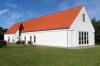 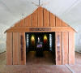 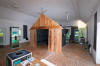 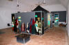 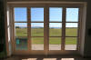


Alle Fotos auf dieser Seite habe ich bei meinem letzten Besuch in Tissø am 31.August 2016 aufgenommen (Ausnahme Schmuck aus dem Nationalmuseum).
Info für Sie als Besucher meiner Webseite: Zur Einstimung kann ein in deutscher Sprache erstellter Animationsfilm in 3D im Internet abgerufen werden.
Nach zahlreichen Funden begann man ab 1995 an der Westseite des ca. 1233 ha großen Sees mit systematischen archäologischen Ausgrabungen. Diese führten zu den bekannten Ergebnissen eines Königssitzes mit Kulthaus und Marktplatz.
Um 550 wurde auf der Weststeite des Tissø eine königliche Residenz mit einem großen Hallengebäude bei Bulbrogård errichtet. Nach einem Brand im letzten Teil des 7. Jahrhunderts, bei dem die Halle bei Bulbrogård abbrannte, wurde eine neue Residenz mit Halle weiter südlich bei Fugledegård errichtet.
In der Wikingerzeit lag dieser vermutete Königssitz auf einer Insel. Damals war der Wasserstand 2 m höher, sodass der Platz zu allen Seiten von Wasser und Moor umgeben war. Die Stelle war für den Bau eines Herrschersitzes strategisch günstig, weil sie leicht zu verteidigen und gut zu Schiff erreichbar war. Vielleicht wurde der Ort auch ausgewählt, weil der Tissø schon seit Jahrhunderten als ein heiliger See galt.
Die große Halle bei Fugledegård war der Mittelpunkt der Siedlung. In einer Einzäunung südlich der Halle lag ein kleines Kulthaus. Hier spielten sich wohl religiöse Rituale ab und hier wurden wohl die heiligen Gegenstände aufbewahrt. Ein erhöhter Phosphatwert in der Erde dürfte vom Blut und den Knochen von Opfertieren stammen.
Weitere Gebäude, so eine Schmiede und eine Reihe weiterer Gebäude wie Ställe, Speicher und Wohnhäuser lagen westlich davon. Der ganze Bereich war von einem kräftigen Palisadenzaun umgeben.
Die Siedlung am Tissø war während der Wikingerzeit eine der reichsten in Dänemark. In der Umgebung wurden mehrere Gold- und Silberschätze, Schmuckstücke, Waffen, Werkzeug, Münzen, Gewichte, Formen und Gießanfall der Schmuckproduktion gefunden. Die Gegenstände sind von hoher Qualität und in mehreren Fällen einzigartig.
Entlang der Halleby Å, der Bach der die Anlage gegen Süden abgrenzt, lag ein großes Gewerbegebiet mit einem Marktplatz, das von Handwerkern und Händlern bei besonderen Anlässen besucht wurde.
Die Siedlung am Tissø ähnelt Kaiser Karls des Großen Sitz in Aachen. Auch hier lagen Königshof, Kultstätte und Markt dicht beisammen.
Wenn man sich nach der Ausstellung in Richtung See begibt, erkennt man unschwer, dass die einzelnen ergrabenen Gebäude heute im Gelände durch Steine markiert sind, an denen sich kleine Infotafeln mit Text und Bildern befinden. Die Pfostenlöcher der großen Halle sind hingegen schon seit etlichen Jahren mit Holzpfosten markiert. So ist es auch noch heute möglich sich einen Eindruck von der wikingerzeitlichen Anlage zu machen.
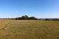 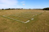 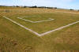 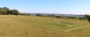 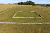 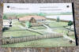


Das große Hallengebäude war das Wahrzeichen der Macht und ein Symbol des hohen Standes des residierenden Herrschers. Im Vergleich zu anderen Gebäuden am Tissø war sie enorm 48 m lang, 12,5 m breit, was einer Fläche von 550 m² entspricht - und wahrscheinlich 2 Stockwerke hoch!
Der Festsaal lag am östlichen Ende der Halle. Der große offene Raum bot bei den Festen des Königs zahlreichen Menschen Platz. Durch die Feste sicherte er sich die Loyalität der Großen und band treue Krieger durch Geschenke an sich. Die Krieger waren die Gefolgschaft des Königs. Sie waren seine Leibwächter und seine Heerschar, schworen ihm ewige Treue und versprachen ihrem König in Krieg und Frieden zu folgen und ihn zu beschützen.
Bei der Halle wurden ungewöhnlich viele Amulette gefunden, u. a. Thorshämmer und kleine Schmuckstücke, die als Figuren der nordischen Mythologie gestaltet waren.
Funde von Tierknochen verraten, was bei den Festmahlzeiten verzehrt wurde. Scherben von Trinkgläsern und die Stimmschraube eines Saiteninstruments lassen Rückschlüsse auf die Musik, Heldenlieder und Trinkgelage bei den Festen zu.
Der bemerkenswerteste Fund aus der Region Tissø, der goldene Halsring, wurde bereits im Frühjahr 1977 durch den Landwirt Lars Krogsager bei der Feldarbeit auf einem Stück Land gemacht, das schon auf einer Karte von 1786 "Goldacker" genannt wird. Von daher kann wohl vermutet werden, dass dies nicht der erste Fund dieser Art war. Der um 950 n. Chr. hergestellte Goldring hat einen inneren Durchmesser von ca. 31 cm, wiegt 1790 Gramm, ist aus vier miteinander verflochtenen Strängen aus fast reinem Gold gewunden und hatte den Wert von 500 Rindern in der Wikingerzeit. Für diesen Schatzfund konnte der Finder den bis dahin höchsten Finderlohn von 60.000 DKR entgegennehmen! Das Original befindet sich im Nationalmuseum in Kopenhagen. Als er 1994 von dort an das Moesgård Museum ausgeliehen war, wurde er durch Einbrecher gestohlen und kam erst gegen ein hohes Lösegeld von 175.000 DKR am 29.06.1994 - acht Tage nach dem Diebstahl - wieder zurück. Glücklicherweise wurde er vom Dieb nicht eingeschmolzen, wie es 1802 den beiden berühmten Goldhhörnern von Gallehus erging!

Der originale Goldring ist vom 11.02. bis zum 06.06.2017 in der Ausstellung "Odin, Thor und Freyja, Skandinavische Kultplätze des 1. Jahrtausends n. Chr. und das Frankenreich" im Archäologischen Museum in Frankfurt am Main zu sehen!
Inzwischen wurde 2013 durch die Goldschmiede Dorthe und Ebbe Hjorth aus Gettrup eine Kopie aus vergoldetem Feinsilber angefertigt, die in der o.a. Ausstellung ausgestellt ist.


Fakten über die Siedlung am Tissø
Siedlung und Gewerbegebiete. Ca. 500.00 m²
Ausgrabungen: ca. 100.00 m²
Metallfunde: ca. 12.000 Gegenstände, z. B. vergoldete Silber- und Bronzegegenstände, Waffen, Münzen, Gewichte, Bruchsilber, Werkzeug, Messer und Produktionsabfälle.
Knochenfunde: ca. 80.000 Stück, über 250 kg Knochen von Tieren sowie Speisereste
Jeweils am ersten Wochende im Oktober eines jeden Jahres findet am Besucherzentrum Fugledegård seit 2010 auch ein Wikingermarkt statt, der sich steigenden Besucherzahlen erfreut - www.vikingemarked.dk.
Der Wikingermarkt konnte bereits sein 10-jähriges Jubiläum feiern. Zu diesem Anlass wurde auf dem Areal am 05.10.2019 ein Runenstein mit der Inschrift "Denne kuml (mindesmærke) og de rødmalede runer står efter folket ved Tissø. Erik huggede.aufgestellt.
Übersetzung: "Dieses Kuml (Denkmal) und die rot gestrichenen Runen stehen hinter den Menschen in Tissø. Geritzt von Erik."
Der Stein hat ein Gewicht von ca. 1700 kg und ist ca. 1,50 m hoch. Erschaffen wurde der Runenstein von dem professionellen Runenritzer Erik Sandquist aus Kopenhagen. Es ist bereits sein 73. Exemplar. Er hat schon Runensteine in Norwegen, Schweden, Island, Grönland, den Niederlanden, England, Deutschland, Polen und der Ukraine geritzt. Von ihm stammt auch das prächtige Exemplar in Jelling.

Das Foto wurde aufgenommen von:
Julie Dam-Larsen
Forhistorisk Arkæolog, Museolog og Cand.Scient. i Informationsvidenskab og Kulturformidling
Kulturformidler og Projektkonsulent - Naturpark Åmosen og Formidlingscenter Fugledegård
Die Nutzung dieses Fotos auf meiner Homepage wurde mir von ihr freundlicherweise am 22.02.2021 gestattet - Mange tak!
Bei einem Metalldetektorfund vom September 2016 südlich der Halleby Å handelt es sich womöglich um den Fund des ältesten Kreuzanhängers in Dänemark überhaupt.
Bei meinem letzten Besuch im Nationalmuseum in Kopenhagen am 07.08.2015 konnte ich auch etliche originale Fundstücke - auch den großen goldenen Halsring - aus Tissø in Augenschein nehmen. Einige Fotos habe ich hier:
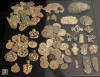 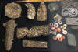 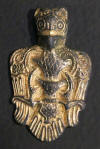 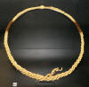


Eine qualitativ bessere Aufnahme von dem goldenen Halsring von Tissø (Original) habe ich hier: